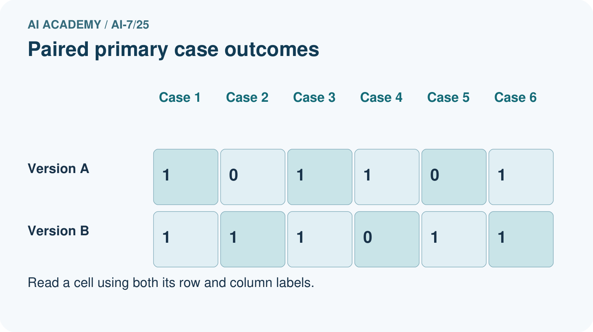
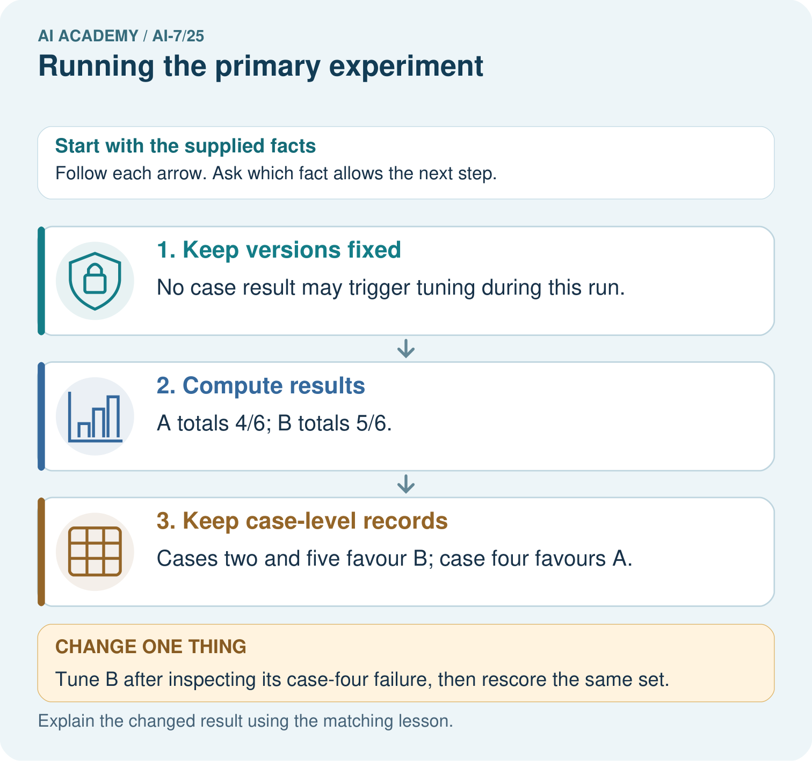
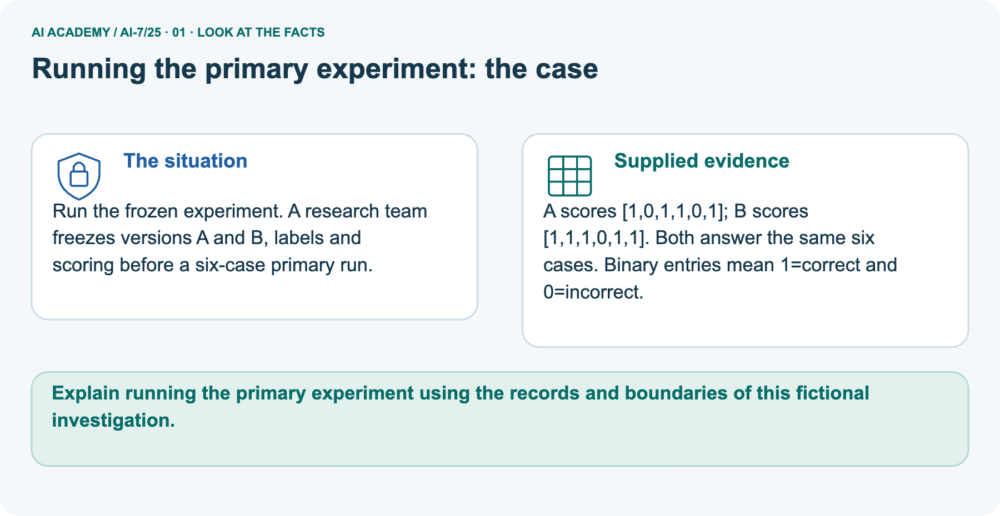
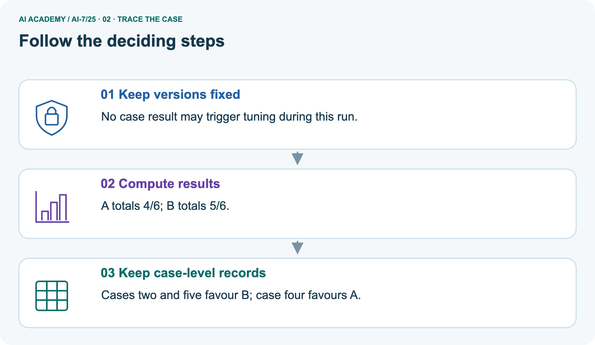
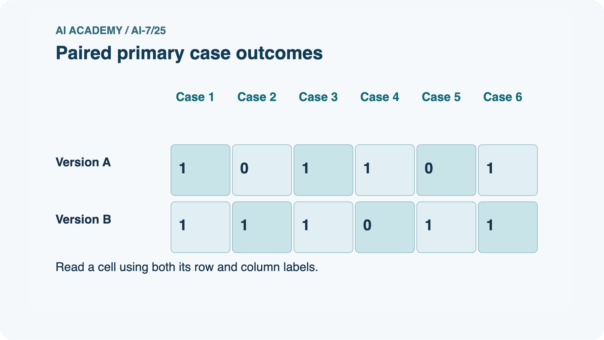
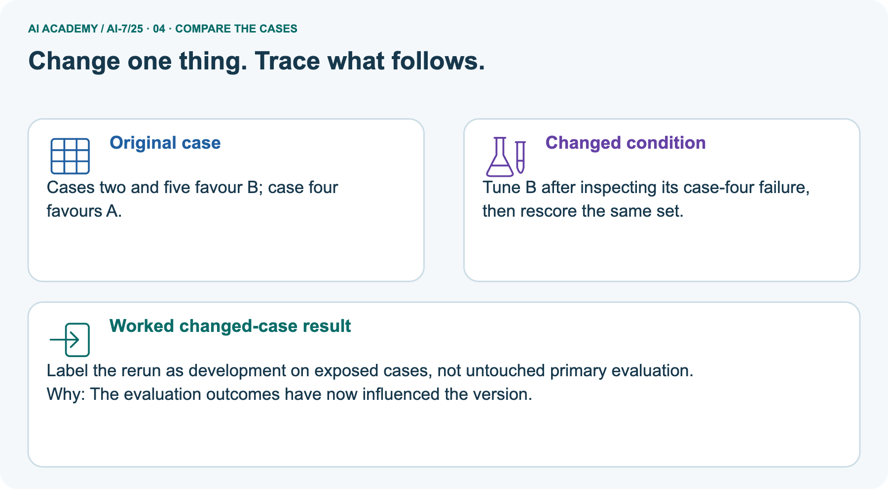
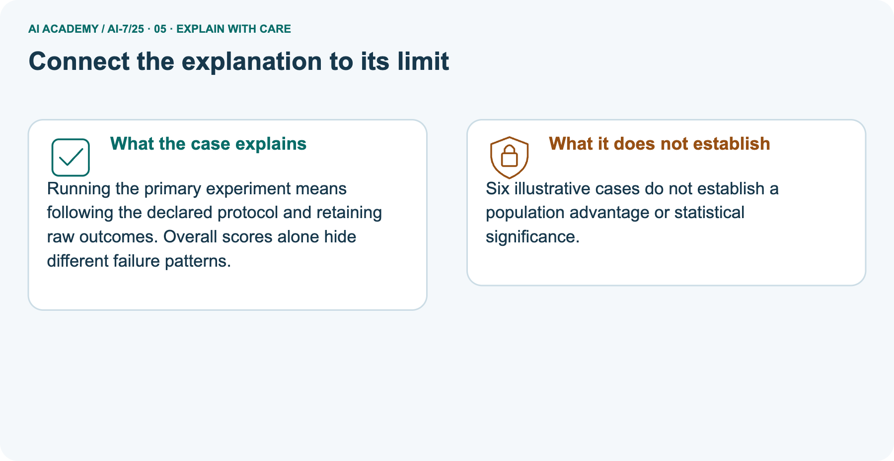
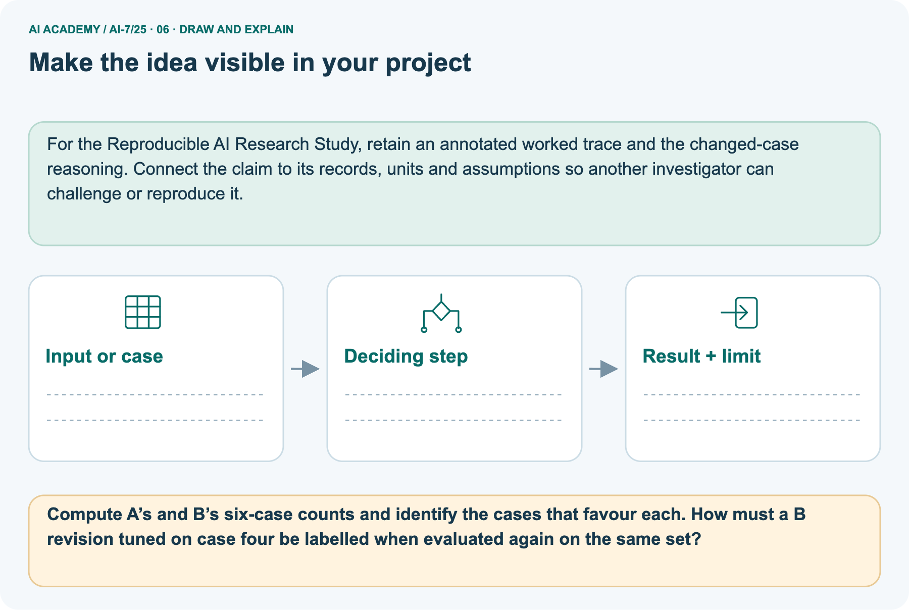

AI Academy · Level 7 · Grade 12 · Week 25 · Workbook
Running the primary experiment
Learn to understand, design, build, test and explain AI systems responsibly.
Project: Reproducible AI Research Study
THE CONNECTED WEEK
One complete research-case evidence record.
Report completion coverage, paired failures and later revisions without hiding missing cases.
Keep one habit: Recall → W1–W3/W5 → independent case → project evidence → feedback and delayed return.
Main lesson · Section 1
Recall · Retrieve before notes
Keep this task’s inputs,rule and response together.
Complete task and evidence
Try the recall before opening notes. Then use a different colour or a labelled second line to correct your explanation.
Without opening the old lesson, explain one key idea from Reproducible environment and records. Give an example and a mistake that the idea helps you avoid.
Without opening the old lesson, explain one key idea from Pilot experiments. Give an example and a mistake that the idea helps you avoid.
Without opening the old lesson, explain one key idea from Research ethics and consent. Give an example and a mistake that the idea helps you avoid.
Reproducible environment and records
Pilot experiments
Research ethics and consent
Main lesson · Section 5
W1 · Explain the current example
Keep this task’s inputs,rule and response together.
Complete task and evidence
A primary experiment follows the fixed plan, preserves raw outcomes and reports deviations separately. Main twenty eligible cases include sixteen passes, two failures and two unassessed after outage. Completed count is eighteen. Planned completed-case pass rate is 16/18 ≈ 88.889%; coverage is 18/20 = 90%, with two unassessed outcomes explicit. The different 16/20 rate is not the same metric.
Do not assume missing outcomes match completed ones or silently retry away failures. Separate frozen six-case picture has A flags 1, 0, 1, 1, 0, 1 and B flags 1, 1, 1, 0, 1, 1: totals four and five. B wins C2/C5, A wins C4, with three ties. Net gain one hides three changed cases. Tuning B using C4 creates a later revision; same-set rescoring is development evidence and the revised score is unknown.
Supplied records establish no real model execution, significance or population advantage.
Explain the weekly mechanism in your own words. Use the worked scenario to name its input, decision rule and output.
Main lesson · Section 6
W2 · Trace the worked case
Keep the supplied inputs, comparison rule and evidence together.
Complete task and evidence
A primary experiment follows the fixed plan, preserves raw outcomes and reports deviations separately. Main twenty eligible cases include sixteen passes, two failures and two unassessed after outage. Completed count is eighteen. Planned completed-case pass rate is 16/18 ≈ 88.889%; coverage is 18/20 = 90%, with two unassessed outcomes explicit. The different 16/20 rate is not the same metric.
Do not assume missing outcomes match completed ones or silently retry away failures. Separate frozen six-case picture has A flags 1, 0, 1, 1, 0, 1 and B flags 1, 1, 1, 0, 1, 1: totals four and five. B wins C2/C5, A wins C4, with three ties. Net gain one hides three changed cases. Tuning B using C4 creates a later revision; same-set rescoring is development evidence and the revised score is unknown.
Supplied records establish no real model execution, significance or population advantage.
Twenty eligible cases: 16 pass, 2 fail, 2 unassessed after outage. Plan reports completed rate plus coverage. Show the intermediate steps and give the conclusion with its scope.
| Main quantity | Calculation | Interpretation |
|---|---|---|
| Eligible | 16 + 2 + 2 = 20 | All planned eligible cases |
| Completed | 16 + 2 = 18 | Assessed pass/fail outcomes |
| Completed-case pass rate | 16/18 = 8/9 ≈ 88.889% | Rate among completed cases |
| Coverage | 18/20 = 90% | Two of twenty remain unassessed |
| Unassessed | 2 | Retain as unknown outcomes |
| Different possible metric | 16/20 = 80% known passes among all eligible | Not the planned completed-case rate |
| Inference limit | Missingness may matter | Do not assume unassessed outcomes resemble completed cases |
Main lesson · Section 7
W3 · Repair a misconception
Keep this task’s inputs,rule and response together.
Complete task and evidence
A primary experiment follows the fixed plan, preserves raw outcomes and reports deviations separately. Main twenty eligible cases include sixteen passes, two failures and two unassessed after outage. Completed count is eighteen. Planned completed-case pass rate is 16/18 ≈ 88.889%; coverage is 18/20 = 90%, with two unassessed outcomes explicit. The different 16/20 rate is not the same metric.
Do not assume missing outcomes match completed ones or silently retry away failures. Separate frozen six-case picture has A flags 1, 0, 1, 1, 0, 1 and B flags 1, 1, 1, 0, 1, 1: totals four and five. B wins C2/C5, A wins C4, with three ties. Net gain one hides three changed cases. Tuning B using C4 creates a later revision; same-set rescoring is development evidence and the revised score is unknown.
Supplied records establish no real model execution, significance or population advantage.
A report omits this qualification: Following the plan and reporting deviations are required even when results contradict the hypothesis.
Explain how omitting it could change a reader's interpretation, and write an accurate replacement.
Main lesson · Section 9
W5 · Explain the limitation
Keep this task’s inputs,rule and response together.
Complete task and evidence
A primary experiment follows the fixed plan, preserves raw outcomes and reports deviations separately. Main twenty eligible cases include sixteen passes, two failures and two unassessed after outage. Completed count is eighteen. Planned completed-case pass rate is 16/18 ≈ 88.889%; coverage is 18/20 = 90%, with two unassessed outcomes explicit. The different 16/20 rate is not the same metric.
Do not assume missing outcomes match completed ones or silently retry away failures. Separate frozen six-case picture has A flags 1, 0, 1, 1, 0, 1 and B flags 1, 1, 1, 0, 1, 1: totals four and five. B wins C2/C5, A wins C4, with three ties. Net gain one hides three changed cases. Tuning B using C4 creates a later revision; same-set rescoring is development evidence and the revised score is unknown.
Supplied records establish no real model execution, significance or population advantage.
For the worked scenario, propose one additional case that could reveal a failure, describe its expected outcome before running it, and explain what would need to remain fixed for a fair comparison.
Do not reuse W4 as a new final test after receiving feedback.
Main lesson · Section 4
Try alone · Selected transfer
Keep this task’s inputs,rule and response together.
Complete task and evidence
Twelve eligible cases include 9 passes, 1 failure and 2 unassessed cases. Report completed-case pass rate (passes / completed cases), assessment coverage (completed / eligible cases) and the unassessed count.
Attempt this case before feedback. Record any help. Earlier examples below are further practice; a case already practised with feedback cannot establish fresh transfer.
Independent case: Apply a new case independently
Main lesson · Section 10
Project · Keep the research evidence
Preserve the question, protocol, observations, analysis and limits.
Complete task and evidence
Add a labelled running the primary experiment evidence sheet to Reproducible AI Research Study. Show how you can explain the mechanism and terminology of running the primary experiment.
Use the supplied fictional case and keep its inputs, intermediate steps, calculation or prediction, and limitation. Connect this record to last week’s record; a matching answer without a trace is insufficient.
Main lesson · Section 11
Feedback · Repair and return
Keep this task’s inputs,rule and response together.
Complete task and evidence
Revisit this idea with your teacher after a delay. Familiarity is different from explaining and using it on a changed case.
| Evidence | My record |
|---|---|
| Worked alone / hint / model | |
| First step I repaired and why | |
| New case checked later; date and result | |
| What I can now explain without notes | |
| One remaining question |
Reference bank and extra practice
Choose the reference that helps your next step.
Reference · Supported W2 record
Reference · Section 2
Reference · Supported W2 record
Keep this task’s inputs,rule and response together.
Complete task and evidence
Use W2: Trace the worked case for Running the primary experiment. Record the answer once; the lesson and workbook refer to the same attempt.
| Given inputs | Procedure I chose | Middle steps | Result and check |
|---|---|---|---|
Extra practice · Individual reasoning check
Reference · Section 3
Extra practice · Individual reasoning check
Keep this task’s inputs,rule and response together.
Complete task and evidence
Use the worked case for Running the primary experiment. Proposed explanation: “The worked result establishes every future case”. Decide whether this explanation is supported.
Point to the step or supplied fact that decides; explain your repair if needed.
Reference · Earlier W4 response copy
Reference · Section 8
Reference · Earlier W4 response copy
Keep this task’s inputs,rule and response together.
Complete task and evidence
Twelve eligible cases include 9 passes, 1 failure and 2 unassessed cases. Report completed-case pass rate (passes / completed cases), assessment coverage (completed / eligible cases) and the unassessed count.
Extra practice · Pictured case
Reference · Section 12
Extra practice · Pictured case
Keep this task’s inputs,rule and response together.
Complete task and evidence
Run the frozen experiment. A research team freezes versions A and B, labels and scoring before a six-case primary run.
A scores [1,0,1,1,0,1]; B scores [1,1,1,0,1,1]. Both answer the same six cases. Binary entries mean 1=correct and 0=incorrect.
Compute A’s and B’s six-case counts and identify the cases that favour each. How must a B revision tuned on case four be labelled when evaluated again on the same set?
Support used: alone / hint / worked example. This record is practice evidence.
Project connection: For the Reproducible AI Research Study, retain an annotated worked trace and the changed-case reasoning.
Connect the claim to its records, units and assumptions so another investigator can challenge or reproduce it.







Reference · Project milestone
Reference · Section 13
Reference · Project milestone
Keep this task’s inputs,rule and response together.
Complete task and evidence
Project: Reproducible AI Research Study
Current milestone: Prepare the demonstration. Gather reproducible instructions, evidence, access checks and remaining limitations.
For the Reproducible AI Research Study, retain an annotated worked trace and the changed-case reasoning. Connect the claim to its records, units and assumptions so another investigator can challenge or reproduce it.
| Evidence to keep | My record |
|---|---|
| This week’s input and deciding step | |
| Prediction and actual result (or labelled paper trace) | |
| One change since the previous checkpoint and why | |
| One error or limit and the next test |
Extra practice · Predict,check and repair
Reference · Section 14
Extra practice · Predict,check and repair
Keep supported feedback separate from the independent case.
First supported question and optional hint
Run the frozen experiment. A research team freezes versions A and B, labels and scoring before a six-case primary run.
Which labelled step matches this detail? Cases two and five favour B; case four favours A.
1. Compute results
2. Keep versions fixed
3. Keep case-level records
Hint if needed: Read the steps in the pictorial case. Match the supplied detail to the stage that performs or records it.
Practice 1: explain the deciding evidence
Check after the first attempt
After your attempt, compare with the supported explanation: Keep case-level records Cases two and five favour B; case four favours A.
Running the primary experiment means following the declared protocol and retaining raw outcomes. Overall scores alone hide different failure patterns.
Changed-case question and optional hint
Changed-case practice: Tune B after inspecting its case-four failure, then rescore the same set. Which conclusion is supported by the supplied facts?
1. Label the rerun as development on exposed cases, not untouched primary evaluation.
2. This one example guarantees correct results for every future input.
3. We can decide the result without examining the changed input or the procedure.
Hint if needed: Use the changed condition and the deciding step in the pictorial trace. The answer must say what follows from those facts.
Practice 2: explain the deciding evidence
Check after the changed attempt
After your attempt, compare with the supported explanation: Label the rerun as development on exposed cases, not untouched primary evaluation. The evaluation outcomes have now influenced the version.
Repair and retain the record
Review Reproducible environment and records (ai-7/24). Goal: Explain the mechanism and terminology of reproducible environment and records. Short practice: Trace the recorded mean for 2,4,6 and its changed result for 2,4,9.
Which artefacts must accompany the output so another team can identify the exact run?. Return to this week and explain what you changed.
Review Pilot experiments (ai-7/22). Goal: Explain the mechanism and terminology of pilot experiments. Short practice: Calculate reviewer agreement on the four pilot answers.
What can the disagreement improve, and why are those revised practice answers not untouched final evidence?. Return to this week and explain what you changed.
Review Research ethics and consent (ai-7/19). Goal: Explain the mechanism and terminology of research ethics and consent. Short practice: Identify which uses the drawing consent permits and excludes.
Can the unrelated project reuse the drawings under this agreement, and what new authorisation would be needed?. Return to this week and explain what you changed.
Use Download completed work in the hosted lesson to export your answers, reflections, practice feedback and code-run evidence. Open the HTML copy to read or print it.
Drafts stay in this browser when storage is available; clear drafts on a shared device.
Earlier wording, alternatives and picture transcripts
Use this supported practice once, in the browser or on paper. Keep the reserved independent assessment for a separate first attempt before teacher feedback.
Repair a missing building block
Keep your completed work
Reference · Six-picture response sheets
Reference · Section 15
Reference · Six-picture response sheets
Choose the picture that helps explain the current step.
01. Running the primary experiment: the case



Run the frozen experiment. A research team freezes versions A and B, labels and scoring before a six-case primary run. Supplied facts: A scores [1,0,1,1,0,1]; B scores [1,1,1,0,1,1]. Both answer the same six cases.
Binary entries mean 1=correct and 0=incorrect.
Point to the given fact that matters most. Explain why it matters.
02. Follow the deciding steps



Keep versions fixed: No case result may trigger tuning during this run. → Compute results: A totals 4/6; B totals 5/6. → Keep case-level records: Cases two and five favour B; case four favours A.
Point to each numbered stage and explain which recorded input it uses.
03. Paired primary case outcomes



Paired primary case outcomes. Version A: Case 1 = 1, Case 2 = 0, Case 3 = 1, Case 4 = 1, Case 5 = 0, Case 6 = 1. Version B: Case 1 = 1, Case 2 = 1, Case 3 = 1, Case 4 = 0, Case 5 = 1, Case 6 = 1.
Read the labels and values. Explain the relationship the model shows.
04. Change one thing. Trace what follows.



Original case: Cases two and five favour B; case four favours A. Changed condition: Tune B after inspecting its case-four failure, then rescore the same set.
Expected result: Label the rerun as development on exposed cases, not untouched primary evaluation. Reason: The evaluation outcomes have now influenced the version.
Predict before checking the worked changed-case result. Name what changed and what the supplied facts allow you to conclude.
05. Connect the explanation to its limit



Running the primary experiment means following the declared protocol and retaining raw outcomes. Overall scores alone hide different failure patterns.
Limit: Six illustrative cases do not establish a population advantage or statistical significance.
Explain the case, then point to a limit on the claim.
06. Make the idea visible in your project



For the Reproducible AI Research Study, retain an annotated worked trace and the changed-case reasoning. Connect the claim to its records, units and assumptions so another investigator can challenge or reproduce it.
Draw your input, deciding step, result and limit. Supported question: Compute A’s and B’s six-case counts and identify the cases that favour each.
How must a B revision tuned on case four be labelled when evaluated again on the same set?
Draw your project trace and justify the deciding step using evidence.